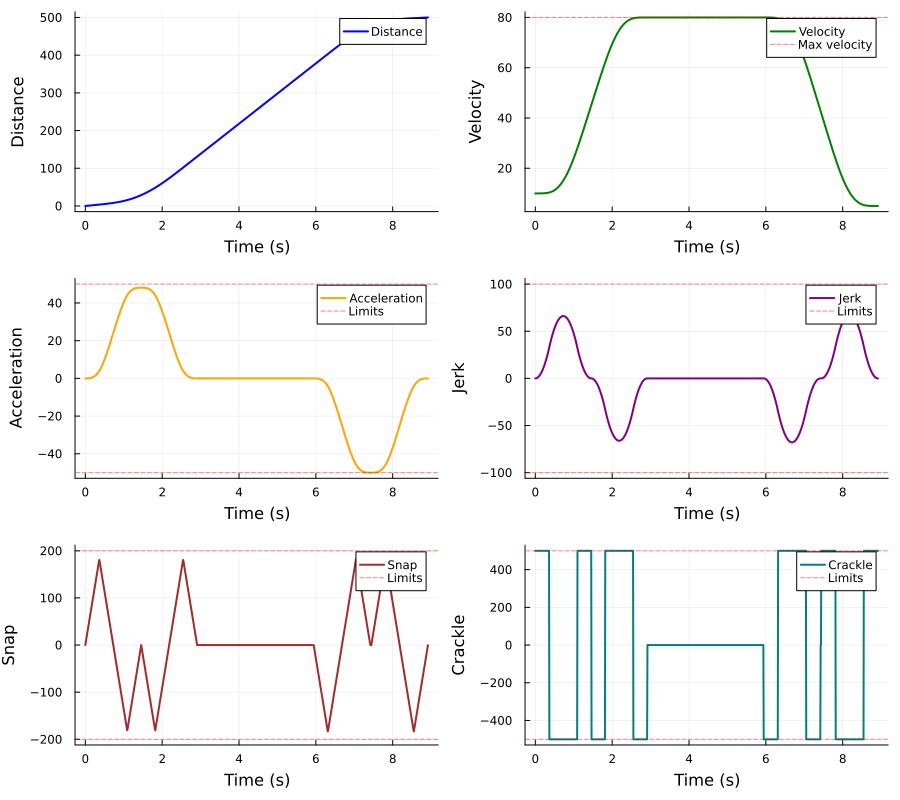

Example
This example generates a trajectory and plots all kinematic derivatives.
using PruntTrajectories
using Plots
# Define kinematic limits
accel_max = 50.0 # Maximum acceleration
jerk_max = 100.0 # Maximum jerk
snap_max = 200.0 # Maximum snap
crackle_max = 500.0 # Maximum crackle
# Trajectory parameters
start_vel = 10.0 # Starting velocity
max_vel = 80.0 # Maximum allowed velocity
end_vel = 5.0 # Ending velocity
distance = 500.0 # Total distance to travel
# Generate the optimal profile
profile = optimal_full_profile(
start_vel, max_vel, end_vel, distance,
accel_max, jerk_max, snap_max, crackle_max
)
println("Total time: ", total_time(profile), " s")
println("Acceleration phase: ", total_time(profile.accel), " s")
println("Coast phase: ", profile.coast, " s")
println("Deceleration phase: ", total_time(profile.decel), " s")Total time: 8.916878422892516 s
Acceleration phase: 2.909708610051304 s
Coast phase: 3.033557213385058 s
Deceleration phase: 2.9736125994561546 sPlotting All Derivatives
# Generate time samples
t_total = total_time(profile)
n_points = 1000
times = range(0, t_total * 0.9999, length=n_points)
# Compute all derivatives at each time point
distances = [distance_at_time(profile, t, crackle_max, start_vel) for t in times]
velocities = [velocity_at_time(profile, t, crackle_max, start_vel) for t in times]
accelerations = [acceleration_at_time(profile, t, crackle_max) for t in times]
jerks = [jerk_at_time(profile, t, crackle_max) for t in times]
snaps = [snap_at_time(profile, t, crackle_max) for t in times]
crackles = [crackle_at_time(profile, t, crackle_max) for t in times]
Querying Profile at Specific Times
# Query at the midpoint
t_mid = t_total / 2
println("At t = ", t_mid, " s:")
println(" Distance: ", distance_at_time(profile, t_mid, crackle_max, start_vel))
println(" Velocity: ", velocity_at_time(profile, t_mid, crackle_max, start_vel))
println(" Acceleration: ", acceleration_at_time(profile, t_mid, crackle_max))
println(" Jerk: ", jerk_at_time(profile, t_mid, crackle_max))
println(" Snap: ", snap_at_time(profile, t_mid, crackle_max))
println(" Crackle: ", crackle_at_time(profile, t_mid, crackle_max))At t = 4.458439211446258 s:
Distance: 254.83533556390503
Velocity: 80.0
Acceleration: 0.0
Jerk: 0.0
Snap: 0.0
Crackle: 0.0Using distance_at_time_with_accel_flag
The distance_at_time_with_accel_flag function returns both the distance and a boolean indicating whether the query time is past the acceleration phase:
# During acceleration
dist1, past_accel1 = distance_at_time_with_accel_flag(profile, 0.1, crackle_max, start_vel)
println("At t=0.1s: distance=", round(dist1, digits=3), ", past_accel=", past_accel1)
# During coast/decel
t_late = total_time(profile.accel) + 0.1
dist2, past_accel2 = distance_at_time_with_accel_flag(profile, t_late, crackle_max, start_vel)
println("At t=", round(t_late, digits=3), "s: distance=", round(dist2, digits=3), ", past_accel=", past_accel2)At t=0.1s: distance=1.0, past_accel=false
At t=3.01s: distance=138.937, past_accel=true